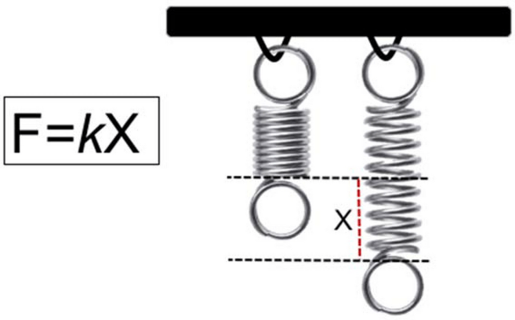
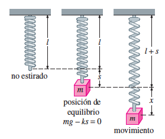
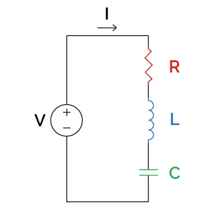

Ecuaciones diferenciales ordinarias
Ingeniería Civil

Modelos que usan EDOs de segundo orden
Tal como vimos en la unidad anterior, las EDs son una herramienta muy poderosa para modelar matemáticamente situaciones de la vida real. En el caso de EDOs de segundo orden, es bueno recordar que si la cantidad \(x(t)\) representa la posición de una particula en el instante \(t\) entonces \(x'(t)\) representa su velocidad, mientras que \(x''(t)\) representa su aceleración.
Por ejemplo, si una partícula tiene masa \(m\) y sobre ella se aplica una fuerza \(F\) entonces la segunda Ley de Newton señala que se debe cumplir la relación \[F=m\cdot a\] donde \(a\) denota la aceleración de la partícula. Por lo tanto si la partícula está ubicada en el posición \(x(t)\) entonces la segunda ley de Newton corresponde a una EDO de segundo orden de la forma \[mx''=F.\]
Resortes: la ley de Hooke
Un ejemplo de lo anterior es aplicar la ley de Newton a resortes por medio de la Ley de Hooke que señala que la fuerza que ejerce un resorte sobre una masa \(m\) es proporcional al desplazamiento (estiramiento o compresión) del resorte

es decir \(F_{\text{resorte}}=kx\) para cierta constante \(k\) positiva que depende de la construcción del resorte.
Resortes no amortiguados

Si del resorte se cuelga una masa \(m\) entonces sobre esta actuan 2 fuerzas: la gravedad y la del resorte (supondremos que no hay resistencia del aire ni otras fuerzas externas). Es decir, la ley de Newton nos dice que (suponiendo que la dirección positiva es hacia abajo) \[mx''=F_{\text{gravedad}}+F_{\text{resorte}}=mg-kx\] y éste alcanza el equilibrio cuando no hay movimiento, es decir si \(x'(t)=x''(t)=0\), es decir cuando hay un desplazamiento de \(mg-ks=0\Rightarrow s_{\text{equilibrio}}=\dfrac{mg}{k}\).
Resortes no amortiguados
En un instante \(t\) posterior se desplaza la masa \(x\) unidades con respecto al equilibrio y nuevametne la Ley de Newton sigue aplicando por lo que se cumple \[mx''=F_{\text{gravedad}}+F_{\text{resorte}}=mg-k(s+x)=\underbrace{mg-ks}_{=0}-kx,\] es decir la posición de la masa \(x(t)\) respecto al punto de equilibrio satisface la EDO lineal de segundo orden homogénea \[x''+\omega^2x=0,\] donde \(\omega^2=\frac{k}{m}\).
La cantidad \(\omega\) es la frecuencia natural de oscilación y su unidad de medida es Hertz que se abrevia como Hz y cumple la relación \[1\text{ Hz}=\frac{1}{1\ s}\]
Resortes no amortiguados
Como \(\omega^2>0\) las raíces de la ecuación auxiliar \(r^2+\omega^2=0\) son \(r=\pm i\omega\) por lo que la solución general se puede escribir como \[x(t)=A\cos(\omega t)+B\sin(\omega t).\]
Considere una masa de \(2\) kilos que alarga \(4\) metros a un determinado resorte para llegar al equilibrio. Si en \(t=0\) se desplaza la masa 8 metros hacia abajo de la posición de equilibrio y se libera con una velocidad ascendente de \(2\) m/s. Encuentre la posición de la masa en el instante \(t\).
Lo primero que debemos hacer es encontrar la constante del resorte, para ello usamos la condición de equilibrio que nos dice que \[s_{\text{equilibrio}}=\frac{mg}{k} \Leftrightarrow k=\frac{mg}{s_{\text{equilibrio}}}\] que en nuestro caso nos dice \(k=\frac{2\cdot 9.8}{4}=4.9\) N/m. Por lo tanto \(\omega^2=\frac{k}{m}=\frac{4.9}{2}=2.45\) Hz\(^2\), de donde \(\omega=\sqrt{2.45}\approx 1.57\) Hz y la solución general de la EDO es de la forma \[x(t)=A\cos(\sqrt{2.45} t)+B\sin(\sqrt{2.45} t).\]
Para encontrar las constantes \(A\) y \(B\) debemos usar las condiciones iniciales: nos dicen que en \(t=0\) hubo un desplazamiento de 8 metros hacia abajo, es decir \(x(0)=8\) y que la masa se liberó con velocidad ascendente de \(2\) m/s, es decir \(x'(0)=-2\) (recordar que la dirección positiva es hacia abajo). Por lo tanto \(A=8\) y \(B=\dfrac{-2}{\sqrt{2.45}}\) y la posición respecto al equilibrio de la particula en el instante \(t\) está dada por \[x(t)=8\cos(\sqrt{2.45} t)-\frac{2}{\sqrt{2.45}}\sin(\sqrt{2.45} t).\]
Resortes amortiguados
Un escenario mas realista es el caso en que existan fuerzas externas al movimiento del resorte como lo puede ser una fuerza de roce. En este caso, nuevamente aplica la ley de Newton, pero ésta queda la forma \[mx''=F_{\text{gravedad}}+F_{\text{resorte}}+F_{\text{roce}}=-kx-\beta x',\] donde recordamos que usualmente la fuerza de roce es proporcional a la velocidad de la partícula y se opone al movimiento (por eso el signo negativo). En este caso la EDO queda \[x''+2\lambda x'+\omega^2 x=0,\] donde \(\omega^2=\dfrac{k}{m}\) y \(\lambda=\dfrac{\beta}{2m}\)
Resortes amortiguados
Para encontrar la solución general de esta EDO usamos la ecuación auxialiar \(r^2+2\lambda r+\omega^2=0\) que tiene raíces \[r=\dfrac{-2\lambda\pm\sqrt{4\lambda^2-4\omega^2}}{2}=-\lambda\pm\sqrt{\lambda^2-\omega^2}\] por lo que dependiendo de la relación entre \(\lambda\) y \(\omega\) tendremos 3 casos:
Sobreamortiguamiento: \(\lambda^2-\omega^2>0\Leftrightarrow\) 2 raíces reales distintas y la solución general es \[x(t)=e^{-\lambda t}\left( Ae^{\sqrt{\lambda^2-\omega^2} t}+Be^{-\sqrt{\lambda^2-\omega^2}t} \right)\]
Amortiguamiento crítico: \(\lambda^2-\omega^2=0\Leftrightarrow\) 1 raíz real repetida y la solución general es \[x(t)=e^{-\lambda t}\left( A+Bt \right)\]
Subamortiguamiento: \(\lambda^2-\omega^2<0\Leftrightarrow\) 2 raíces complejas conjugadas y la solución general es \[x(t)=e^{-\lambda t}\left( A\cos\left( {\sqrt{\lambda^2-\omega^2} t} \right)+B\sin\left( {\sqrt{\lambda^2-\omega^2} t} \right) \right)\]
Sobreamortiguamiento
Considere el sistema resorte-masa dado por el PVI \[x''+5x'+4x=0, \quad x(0)=1, \quad x'(0)=1.\] Encuentre la posición de la particula en cada instante \(t\)
\(x(t)=\frac{5}{3} e^{-t}-\frac{2}{3} e^{-4 t}\)
Amortiguamiento crítico
Encuentre la posición \(x(t)\) para el sistema resorte-masa dado por el PVI \(x''+8x'+16x=0, \quad x(0)=0, \quad x'(0)=-3.\)
\(x(t)=-3 t e^{-4 t}\)
Subamortiguamiento
Resuelva el sistema resorte-masa dado por el PVI \(x''+2 x'+10 x=0, \quad x(0)=-2, \quad x'(0)=0.\)
\(x(t)=e^{-t}\left(-2 \cos(3 t)-\frac{2}{3} \sin(3t)\right)\)
Modelos que usan EDOs de segundo orden
Otro escenario donde aparecen EDOs de segundo orden es en el caso de circuitos eleéctricos

En un circuito en serie que cuenta con una resistencia \(R\), un condensador eléctrico \(C\) y una bobina \(L\) se verifica, usando la Ley de Ohm (para la resistencia), la Ley de Coulumb (para el condensador), y la Ley de Faraday (para la bobinas) se deduce que el voltaje en cada una de estas verifica \[V_R=R\cdot I,\quad V_L=L\cdot I'\quad\text{y}\quad V_C=\frac{Q}{C},\] donde: \(I=I(t)\) es la corriente eléctrica, \(R\) es la resistencia de \(R\), \(L\) es la inductancia de la bobina, \(Q=Q(t)\) es la carga eléctrica y \(C\) es la capacitancia del capacitor. De acuerdo a la ley de Kirchoff, la suma de los voltajes en un circuito debe ser igual al voltaje total al que se somete el circuito, es decir \[V=V_R+V_L+V_C=RI+LI'+\frac{Q}{C}.\] Sin embargo, se sabe que la corriente es la tasa a la cual cambia la carga, es decir \(Q=I'\), por lo tanto podemos escribir la EDO de segundo orden para la carga \[LQ''+RQ'+\frac1{C}Q=V.\]